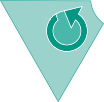
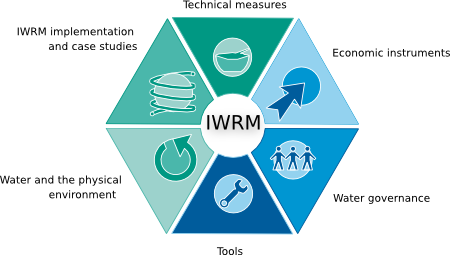
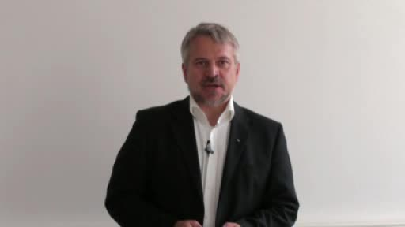

x
Share link:
Embed video:
display:none; visibility:hidden;
<div class="search-results"> {#foreach $T.results as result} {#if $T.result.total > 0} <div class="search-result-item"> <div class="search-result-item-image"> <a href="#!{$T.result.id}"> <img src='img/thumbnails/iwrm_{$T.result.id}.jpg' style="position:relative; border:none; z-index:8; padding: 0px 4px 0px 0px; float:left; width:100px;" class="play-lecturer" /> <img src='img/play-overlay.png' style="position:absolute; margin-left:-44px; border:none; margin-top: 20px; z-index:9; padding: 4px 8px 0px 0; width:40px;" class="play-overlay" /> </a> </div> <div class="search-result-item-info"> <h3><a href="#!{$T.result.id}">{$T.result.title}</a></h3> <div class="xxx">Lecturer: {$T.result.author}</div> <div class="des">Relevance: {$T.result.total}%, search term occures in title ({$T.result.ti}), keywords ({$T.result.tags}), abstract ({$T.result.abstract}), slides ({$T.result.fulltext})</div> <span class="res" hidden>{$T.result.total}</span> </div> </div> {#/if} {#/for} </div>
<div> <span>E-Learing Module on Integrated Water Resources Management | cc by-nc-nd | <a href="#!about">About IWRM-education</a> | <a href="#!sitenotice">Imprint</a></span><br/> <span> <img src="img/logo-bmu.png" height="65"/> <img src="img/logo-iwas.jpg" height="50"/> <img src="img/logo-ihp.jpg" height="40"/> <span style="color:#fff">{$T.loadtime}ms</span> </span> </div>
<h2>About IWRM-education</h2> <h3>Concept/Organisation:</h3> Marco Leidel, Dr. Steffen Niemann, Christian Podlasly, Alemayehu Habte Saliha, Niels Seidel, Andrea Wessler <h3>Lecturers:</h3> Dr.-Ing. Adane Adebe, Dr.-Ing. Seleshi Bekele Awulachew, Prof. Dr. Tenalem Ayenew, Prof. Dr. Klaus-Dieter Balke, Prof. Dr. Thomas Berendonk, Prof. Dr. Christian Bernhofer, Dr. Anik Bhaduri, Prof. Dr.-Ing. Janos Bogardi, Prof. Dr. Dietrich Borchardt, Dr. Johannes Cullmann, Dr. Andriy Demydenko, Dr. Ines Dombrowsky, Prof. Dr. Olivier Graefe, Dr. Walter Huppert, Dr.-Ing Asie Kemal Jabir, Prof. Dr. Peter Krebs, Dr. Paul Lehmann, Marco Leidel, Dr. Franz Lennartz, Dr. Stefan Liehr, Dr. Philipp Magiera, Ursula Meyer, Dr. Timothy Moss, Dr. Roland Müller, Prof. Dr. Jan-Peter Mund, Prof. Dr. Jens Newig, Dr. Steffen Niemann, Prof. Dr.-Ing. Manfred Ostrowski, Dr. Julia Röhrig, Alemayehu Habte Saliha, Prof. Dr. Jochen Schanze, Dr. Waltina Scheumann, Dr. Daniel Tsegai <h3>Production, graphic design:</h3> Andrea Wessler <h3>Software development, hypervideo architecture:</h3> Niels Seidel (niels.seidel@nise81.com)
<h2>Imprint</h2> <h3>Editors</h3> <strong>Prof. Dr. Dietrich Borchardt</strong><br /> Helmholtz Centre for Environmental Research – UFZ, Department Aquatic Ecosystems Analysis and Management<br /> Brückstraße 3a, 39114 Magdeburg<br /> Tel: +49 391 8109757<br /> Fax: +49 391 8109 111<br /> Mail: dietrich.borchardt@ufz.de<br /> URL: <a href="http://www.ufz.de">www.ufz.de</a><br /><br /> <strong>Dr. Johannes Cullmann</strong> IHP/HWRP Secretariat<br /> Federal Institute of Hydrology<br /> Am Mainzer Tor 1<br /> 56068 Koblenz, Germany<br /> Tel.: +49 261 1306-5421<br /> Fax :+49 261 1306-5422<br /> Mail: cullmann@bafg.de<br /> URL: <a href="http://ihp.bafg.de">http://ihp.bafg.de</a><br /><br /> <strong>Prof. Dr. Peter Krebs</strong><br /> Technische Universität Dresden, Institute for Urban Water Management<br /> D-01062 Dresden, Germany<br /> Tel.: +49 351 463-35257<br /> Fax: +49 351 463-37204<br /> peter.krebs@tu-dresden.de<br /> URL: <a href="http://www.tu-dresden.de">www.tu-dresden.de</a> <h3>Limitation of liability for internal content</h3> The content of our website has been compiled with meticulous care and to the best of our knowledge. However, we cannot assume any liability for the up-to-dateness, completeness or accuracy of any of the pages.<br /> Pursuant to section 7, para. 1 of the TMG (Telemediengesetz – Tele Media Act by German law), we as service providers are liable for our own content on these pages in accordance with general laws. However, pursuant to sections 8 to 10 of the TMG, we as service providers are not under obligation to monitor external information provided or stored on our website. Once we have become aware of a specific infringement of the law, we will immediately remove the content in question. Any liability concerning this matter can only be assumed from the point in time at which the infringement becomes known to us. <h3>Data protection</h3> A visit to our website can result in the storage on our server of information about the access (date, time, page accessed). This does not represent any analysis of personal data (e.g., name, address or e-mail address). If personal data are collected, this only occurs – to the extent possible – with the prior consent of the user of the website. Any forwarding of the data to third parties without the express consent of the user shall not take place.<br /> We would like to expressly point out that the transmission of data via the Internet (e.g., by e-mail) can offer security vulnerabilities. It is therefore impossible to safeguard the data completely against access by third parties. We cannot assume any liability for damages arising as a result of such security vulnerabilities. The use by third parties of all published contact details for the purpose of advertising is expressly excluded. We reserve the right to take legal steps in the case of the unsolicited sending of advertising information; e.g., by means of spam mail.<br/> <span style="color:#999">Source: Rose & Partner LLP, provided by <a style="color:#999" href="http://mustervorlage.net/">mustervorlage.net</a></span> <h3>Licence</h3> E-Learning Module on IWRM by <a href="http://www.iwrm-education.org">iwrm-education</a> is licensed under a <a href="http://creativecommons.org/licenses/by-nc-nd/3.0/">Creative Commons Attribution-NonCommercial-NoDerivs 3.0 Unported License</a>. Permissions beyond the scope of this license may be available at <a href="http://www.iwrm-education.org">www.iwrm-education.org</a>.
<h2 class="catHead" style="{$T.style}" itemprop="name">{$T.title}</h2> <div class="catDesc">{$T.desc}</div>
<span class="addToPlaylist" id="playlist-{$T.id}">+</span> <div style="text-align:left; height:230px; position:relative;" class="hyphenate"> <a href="#!{$T.id}"> <img src='img/thumbnails/iwrm_{$T.id}.jpg' style="position:relative; border:none; z-index:8; padding: 4px 8px 0px 0; float:left; width:150px;" class="play-lecturer"/> <img src='img/play-overlay.png' style="position:absolute; margin-left:-64px; border:none; margin-top: 30px; z-index:9; padding: 4px 8px 0px 0; width:50px;" class="play-overlay" /> </a> <div style="display: none;" class="show"> <h3><a href="#{$T.id}">{$T.metadata[0].title}</a></h3> <span class="text" style="display:block; overflow:auto; overflow-x: hidden; width:419px; height:115px; position:absolute; top:95px; padding:4px 10px 4px 0;">{$T.metadata[0].abstract}</span></br> </div> <div class="show"> <h3><a href="#!{$T.id}">{$T.metadata[0].title}</a></h3> <div class="item-meta" style="float:left; text-align:left;display:block; width:100%;"> <b>Lecturer:</b> {$T.metadata[0].author}<br/> <span style="font-size:9px;">{$T.metadata[0].institution}</span><br/> </div> <div class="item-meta" style="float:left; text-align:left;"> <b>Keywords: </b>{#foreach $T.tags as tag}<a href="#!tag:{$T.tag.tagname}" >{$T.tag.tagname}</a>; {#/for}<br/> <b>Duration:</b> {$T.metadata[0].length} min <span hidden class="weight">{$T.metadata[0].weight}</span> </div> </div> </div> <a class="toggle-card" style="float:right; text-align:right; bottom:0;">view abstract</a>
<img src="img/cat1.png" class="cat1 cat" style="position:absolute;"/> <img src="img/cat2.png" class="cat2 cat" style="position:absolute;" /> <img src="img/cat3.png" class="cat3 cat" style="position:absolute;" /> 
<h2 style="margin-bottom:20px;"></h2> <div> <map name="map"> <area shape="poly" coords="172,17,220,99,247,97,293,16,294,16" href="#!category:Technical_measures" /> <area shape="poly" coords="300,19,358,124,265,124,252,98,299,20" href="#!category:Economic_instruments" /> <area shape="poly" coords="266,128,359,129,298,233,253,154,266,129" href="#!category:Water_governance" /> <area shape="poly" coords="246,154,292,236,172,234,217,156" href="#!category:Tools" /> <area shape="poly" coords="105,129,167,237,215,152,201,128" href="#!category:Water_and_the_physical_environment" /> <area shape="poly" coords="106,122,203,123,214,97,168,17" href="#!category:IWRM_implementation_and_case_studies" /> </map>  <br/><br/> One possibility to support the worldwide implementation of IWRM is to improve respective research and education. <br/> This is why IWAS (International Water Research Alliance Saxony), together with the German IHP/HWRP (International Hydrological Programme of UNESCO and Hydrology and Water Resources Programme of WMO), has developed an E-learning module on IWRM that is supposed to complement classical learning options. <br/> Since IWRM is complex and as interdisciplinarity is often missing in water management, the module interlinks lectures, i.e. thematic and geographical linkages (e.g. climate change) between the lectures appear, allowing the user to switch from one lecture to another one. <span class="intro-extended" style="display:none;"> </span> </div> <div style="margin-left:30px;"> To facilitate access to the module, the 39 lectures are subdivided into six categories: <ul style="margin-left:20px;"> {#foreach $T.categories as cat} {#if $T.cat.title != "Introduction"} <li><a style="padding:0" href="#!category:{$T.cat.link}">{$T.cat.title}</a></li> {#/if} {#/for} </ul> Target groups of the module are graduating students in water-related fields, decision makers, water experts and administrative staff. <a href="#!borchardt2" style="font-weight:bold; display:block; font-size:14px; margin-top:20px;position:relative; z-index:8; overflow:hidden;"> See the "Introduction to IWRM" of Prof. Dr. D. Borchardt<br/> <img src="img/thumb-intro2.jpg" style="height:90px;padding-right:4px;float:left;"/>  <img src='img/play-overlay.png' style="position:absolute; margin-left:-64px; margin-top: 30px; z-index:9; padding: 4px 8px 0px 0; width:50px;" class="play-overlay" /> </a> <a href="#!userguide" style="font-weight:bold; display:block; font-size:14px; margin-top:20px;position:relative; z-index:8; overflow:hidden;"> See our User Guide to this E-Learning Module<br/> <img src="img/thumb-u-guide_1.jpg" style="height:90px;padding-right:4px;float:left;"/> <img src="img/thumb-u-guide_2.jpg" style="height:90px;padding-right:4px;float:left;"/> <img src="img/thumb-u-guide_3.jpg" style="height:90px;padding-right:4px;float:left;"/> <img src='img/play-overlay.png' style="position:absolute; margin-left:-64px; margin-top: 30px; z-index:9; padding: 4px 8px 0px 0; width:50px;" class="play-overlay" /> </a> </div>
<h3>technical measures</h3> <h3>economic instruments</h3> <h3>water governance</h3> <h3>tools</h3> <h3>Water and the physical environment</h3> <h3>IWRM implementation and case studies</h3>
<div class="header"><h2 class="meta-title" itemprop="name"></h2><div class="meta-desc"></div></div> <div id="container" itemprop="video" itemscope itemtype="http://schema.org/VideoObject"> <div id="meta"> <div id="screen"></div> <div id="accordion"> <h3><a href="#">Table of Content</a></h3> <div id="toc"></div> <h3><a href="#">Keywords</a></h3> <div id="tags"></div> <!-- <h3><a href="#"></a></h3> <div id="metadata"></div>--> </div> </div> <div id="seq"></div> <div id="overlay"></div> </div>
<div class="header"><h2 class="meta-title" itemprop="name"></h2><div class="meta-desc"></div></div> <div id="container" itemprop="video" itemscope itemtype="http://schema.org/VideoObject"> <div id="screen"></div> </div>
<div id="video-one"> <div class="header"><h2 class="meta-title" itemprop="name"></h2><div class="meta-desc"></div></div> <div id="container-one"> <div id="screen-one"></div> </div> </div> <div id="video-two"> <div class="header"><h2 class="meta-title" itemprop="name"></h2><div class="meta-desc"></div></div> <div id="container-two"> <div id="screen-two"></div> </div> </div>